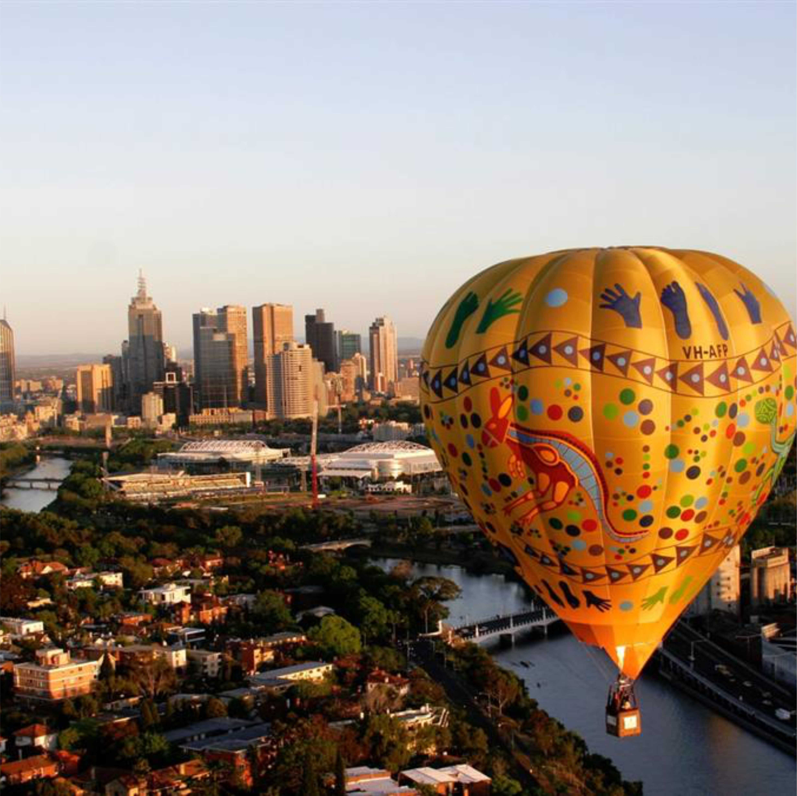

<<<<<<<<<<<<<<<<<<<<<<<<<<<<<<<<<<<<<<<<<<<<<<<<<<<<<<<<<<<<<<<<<<<<<<<>>>>>>>>>>>>>>>>>>>>>>>>>>>>>>>>>>>>>>>>>>>>>>>>>>>>>>>>>>>>>>>>>>>
Apžvelkite Lietuvos sostinę iš oro baliono, Vilniaus senamiestis, Gedimino pilis ir visos kitos žinomos vietos Jums atrodys kaip iš atviruko.
Vilnius yra viena iš nedaugelio Europos sostinių virš kurių leidžiami skrydžiai oro balionais. Dėl šios priežasties ši pramoga dar įspūdingesnė.
Balionai kyla priklausomai n uo vėjo krypties renkantis iš kelių vietų, tokių kaip Baltojo tilto apylinkės, Barbakanas.

<<<<<<<<<<<<<<<<<<<<<<<<<<<<<<<<<<<<<<<<<<<<<<<<<<<<<<<<<<<<<<<<<<<<<<<>>>>>>>>>>>>>>>>>>>>>>>>>>>>>>>>>>>>>>>>>>>>>>>>>>>>>>>>>>>>>>>>>>>
Pamatykite Lietuvos istoriją skrydžio oro balionu metu. Trakų pilis… ją supantys ežerai… vaizdai nepakartojami.
Mes stengiamės, kad oro balionu praskristumėte virš Trakų pilies, todėl renkame pakilimo vietą priklausomai nuo vėjo krypties ir skrisdami bandome skrydžio kursą kreipti kuo arčiau jos. Gamtos užgaidos kartais nepadeda išpildyti gerų norų, tačiau dažniausiai skrendantieji gali pasigrodžėti gyvu vaizdu kaip iš atviruko.
<<<<<<<<<<<<<<<<<<<<<<<<<<<<<<<<<<<<<<<<<<<<<<<<<<<<<<<<<<<<<<<<<<<<<<<>>>>>>>>>>>>>>>>>>>>>>>>>>>>>>>>>>>>>>>>>>>>>>>>>>>>>>>>>>>>>>>>>>>
Norite skristi oro balionu tik Jūs ir Jums artimas žmogus? Siūlome pasirinkti romantišką skrydį oro balionu dviems. Šio skrydžio metu oro balione be Jūsų krepšyje bus tik pilotas. Puiki proga pažymėti svarbią sukaktį ar pasipiršti… Galime skrydžio vietą pasirinkti priklausomai nuo Jums brangių asociacijų: Jūsų miestas, Jūsų tėviškė ar pažinties vieta. Susisiekite ir mes pabandysime rasti sprendimą tinkamiausią Jums.
<<<<<<<<<<<<<<<<<<<<<<<<<<<<<<<<<<<<<<<<<<<<<<<<<<<<<<<<<<<<<<<<<<<<<<<>>>>>>>>>>>>>>>>>>>>>>>>>>>>>>>>>>>>>>>>>>>>>>>>>>>>>>>>>>>>>>>>>>>
Skrydis balionu Klaipėdoje
Apžvelkite uostamiestį iš padangių. Skrendant balionu virš Klaipėdos matosi uostas, senamiestis, banguojanti jūra, neringos juosta, marios. Visi šie vaizdai, matomi vienu metu, todėl tai unikalus ir nepakatojamas pojūtis. Gamtos grožis jus priblokš.
Apžvelkite savo miestą iš Paukščio skrydžio. Pasidžiaukite pažįstamomis vietomis iš dangaus, grožėkitės upės senvage.